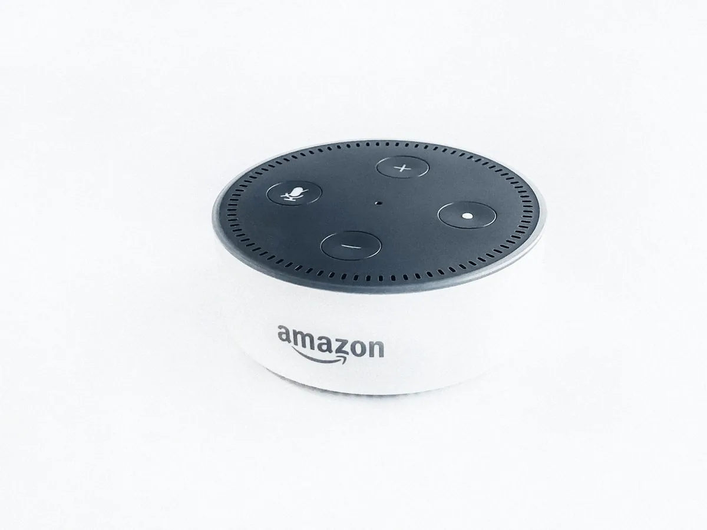
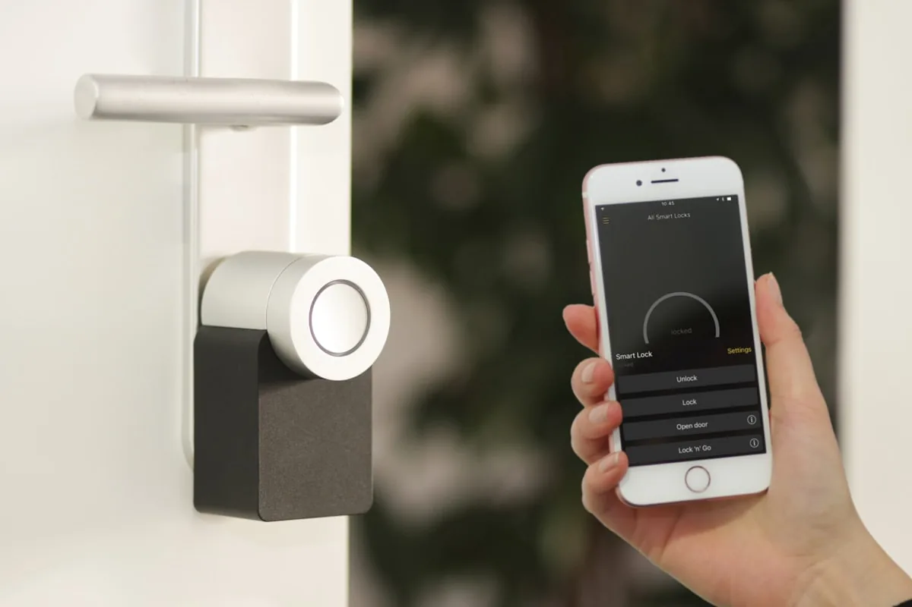

Služby
Kompletné služby od návrhu po dlhodobú správu. Zrozumiteľne aj pre netechnického klienta.
🖥️ PC Build & Performance


Navrhneme komponenty, poskladáme zostavu, otestujeme stabilitu a pripravíme plán upgradu. Jednoducho a zrozumiteľne.
- Návrh zostavy podľa rozpočtu a požiadaviek
- Zostavenie, testovanie a optimalizácia
- Inštalácia OS, ovládačov a softvéru
- Záručný servis a pozáručná podpora
🏠 Home Assistant & Smart Home


Čo tým dosiahneme: všetky zariadenia dostanete pod jednu strechu, v jednom prehľadnom dashboarde. Menej klikania, menej chaosu, viac automatiky.
Príklady automatizácií pre domácnosť:
- Ráno: rolety hore, jemné svetlo, zapnutie kúrenia podľa teploty.
- Odchod z domu: vypnutie svetiel/zásuviek, aktivácia alarmu, notifikácia o otvorených oknách.
- Noc: nočný režim, stlmené osvetlenie chodby, vypnutie vybraných zariadení.
- Bezpečnosť: detekcia pohybu + kamera + okamžitý alert do mobilu.
Príklady automatizácií pre firmu:
- Otvorenie kancelárie: svetlá, klimatizácia a pracovné zóny podľa rozvrhu.
- Mimo pracovnej doby: automatické vypnutie nepotrebných okruhov a kontrola spotreby.
- Bezpečnostné scenáre: alarm + kamera + notifikácie pri neoprávnenom vstupe.
- Monitoring: upozornenia pri výpadku internetu, NAS, alebo kritických zariadení.
Všetko nastavíme tak, aby to bolo zrozumiteľné aj pre netechnického používateľa.
💾 NAS & Backup


Čo je NAS: NAS (Network Attached Storage) je centrálne a bezpečné úložisko pre domácnosť aj firmu.
Čo tým dosiahneme: všetky dáta sú na jednom mieste, so správnymi prístupmi pre domácnosť aj tím vo firme a s pravidelným zálohovaním.
Príklady pre domácnosť:
- Automatická záloha fotiek z mobilov celej rodiny.
- Zdieľané priečinky na dokumenty, videá a domáce projekty.
- Rýchla obnova dát po zmazaní alebo poruche notebooku.
Príklady pre firmu:
- Jednotné firemné úložisko s prístupovými právami podľa roly.
- Automatické zálohy pracovných staníc a kritických zložiek.
- Recovery plán po incidente (ransomware, disk failure, chyba používateľa).
Nastavíme 3-2-1 zálohy, monitorovanie a test obnovy tak, aby bol systém spoľahlivý aj dlhodobo.
🛠️ IT Care


Priebežná správa, aktualizácie, monitoring, prevencia výpadkov a rýchla podpora. Sme tu aj po odovzdaní projektu.
- Mesačný monitoring a aktualizácie systémov
- Prednostná podpora pri incidentoch
- Pravidelné bezpečnostné audity
- Emailová a telefonická podpora
🌐 Multi‑Hub Integrácie


Prepájame platformy a zariadenia do jedného funkčného systému: Apple Home, Google Home, Amazon Alexa, smart klimatizácie, kúrenia, robotické vysávače, kamery, alarmy a ďalšie smart zariadenia v domácnosti alebo firme.
Cieľ je jednoduchý: všetko ovládateľné prehľadne, spoľahlivo a bez chaosu.